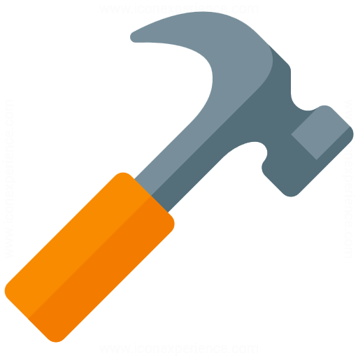
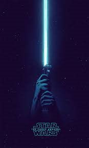

 projects
an insight into SOME OF THE PROJECTS WE HAVE DONE OVER THE YEARS
ongoing projects:
lightsaber
Currently one of our ongoing projects is to create a lightsaber using different materials, including metal and 3D print as well as led strips and a arduino board. We hope to display this for the upcoming Open House and Night Fiesta 2020.
PAST projects:
PINBALL MACHINE
We created a pinball machine asa our contribution to SUTD Open House and Night Fiesta 2019, using arduino, led strips, 3d printed material and wood, we managed to construct a working harry potter-themed pinball machine in time for open house 2019
ARCADE MACHINE

During the term break of Term 1 2019, some of our freshmores banded together to create an arcade machine using a Rasberry Pi for P(ark)ing Day 2019. It was roughly a few weeks of planning and meeting in the FabLab, but they got the job done!
foosball table

As part of Fifth Row Showcase during Discovery Week 2019, we created a foosball table for the incoming freshmores to play with and get a taste of the things we can create together as a club. Running on an arduino board, this Foosball Table is also able to display the scoreboard using on an LED Board. This was its second iteration after the first which was showcased at P(ark)ing day 2018.